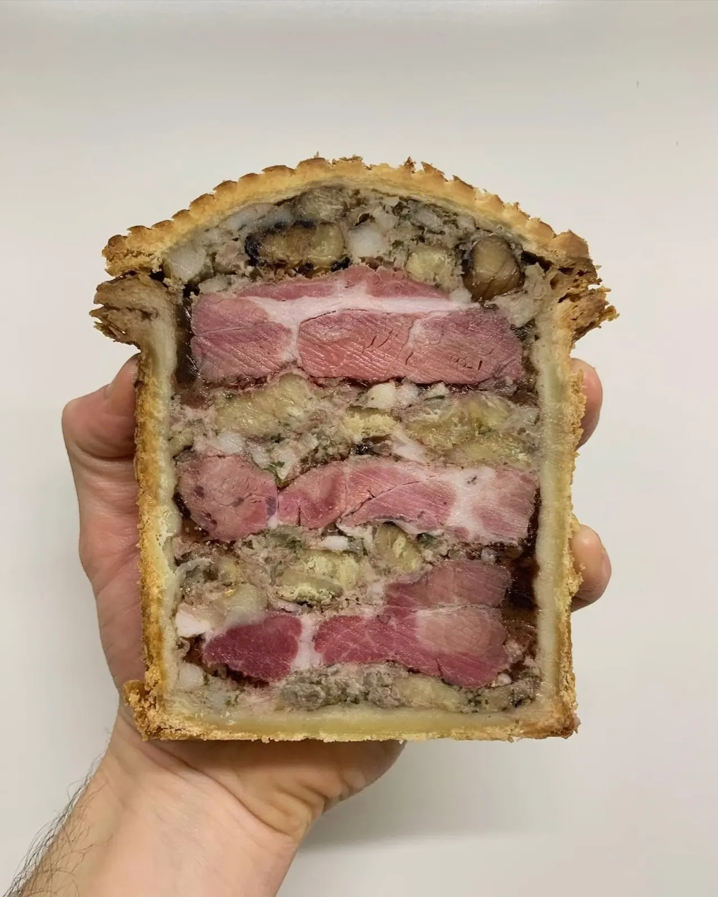
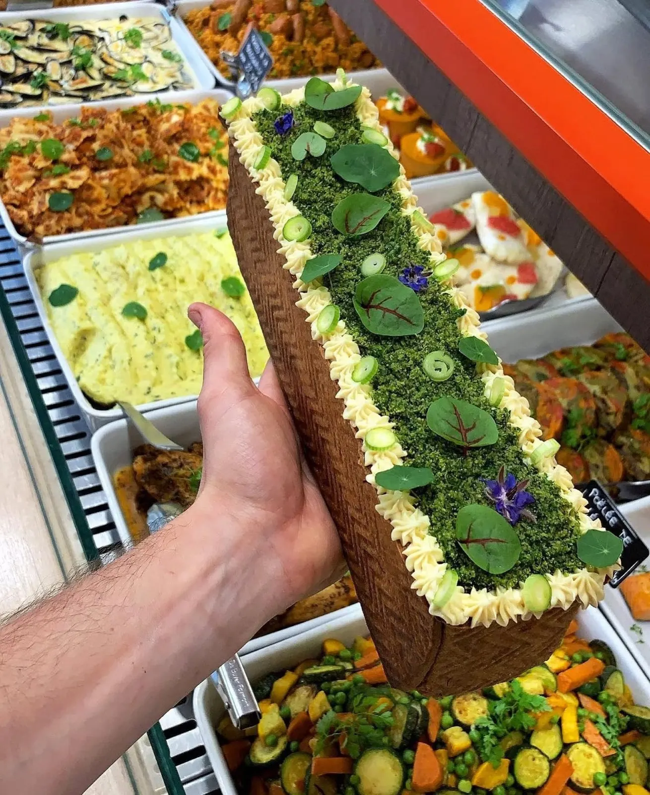
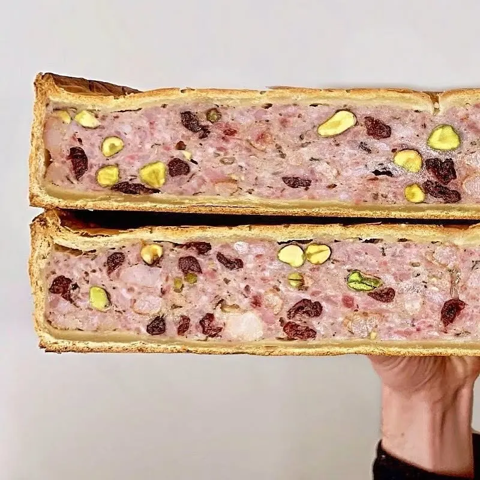
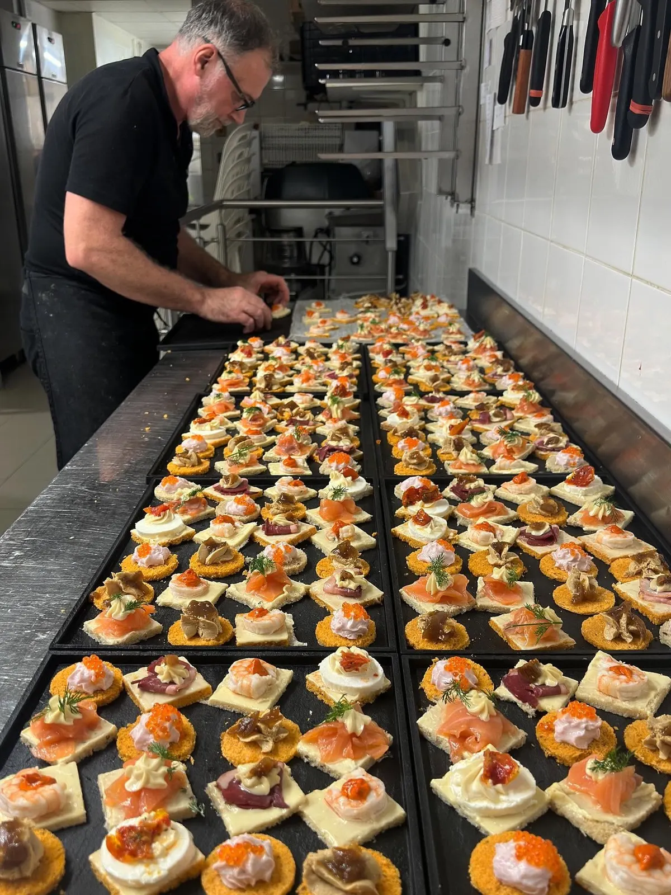
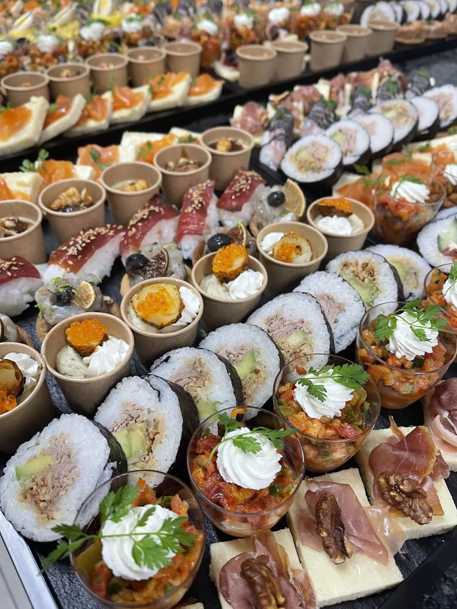
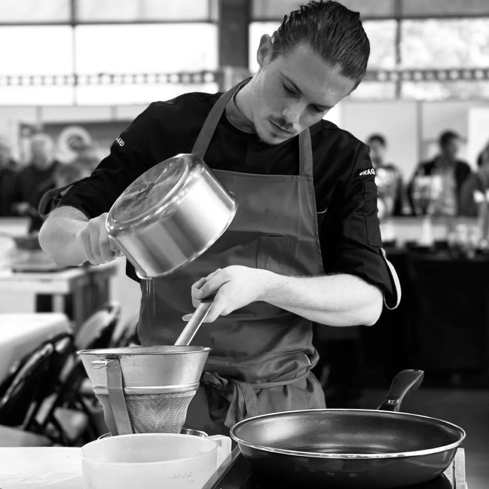
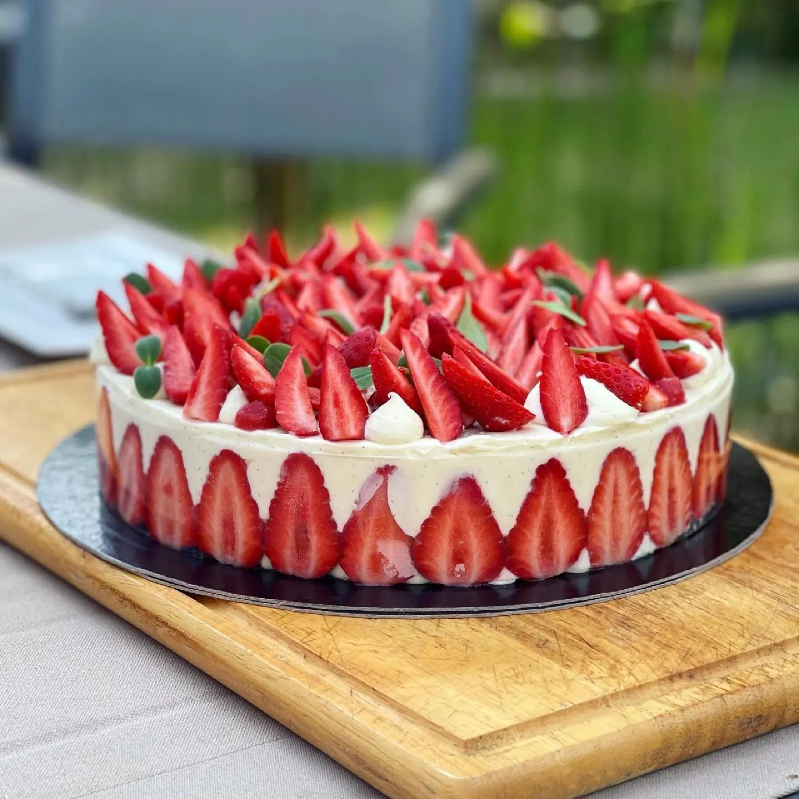
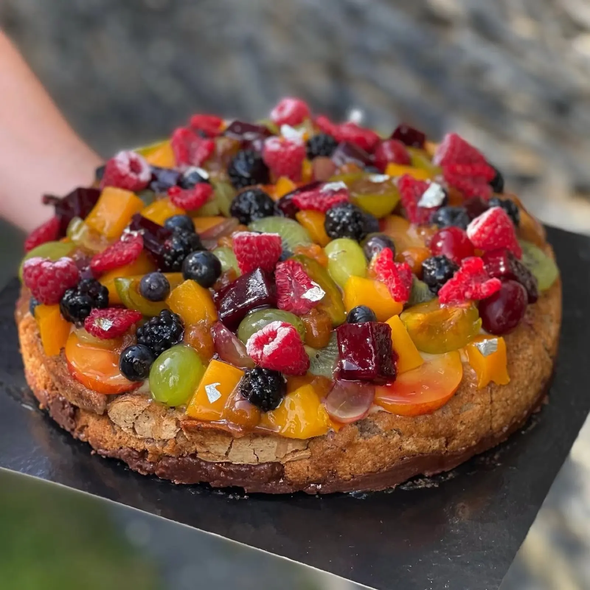
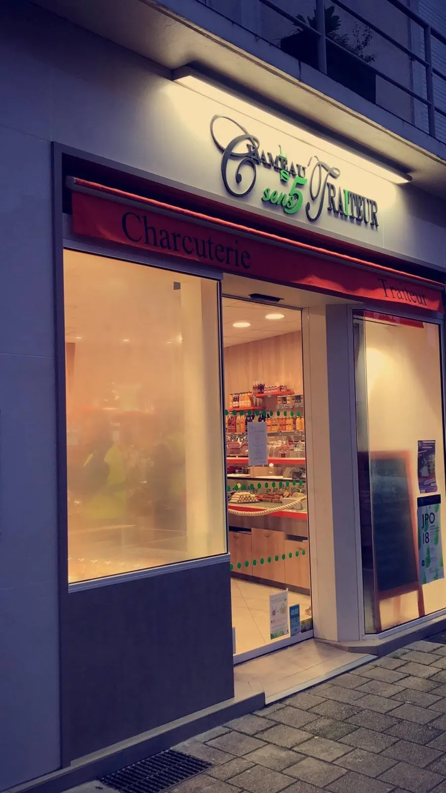
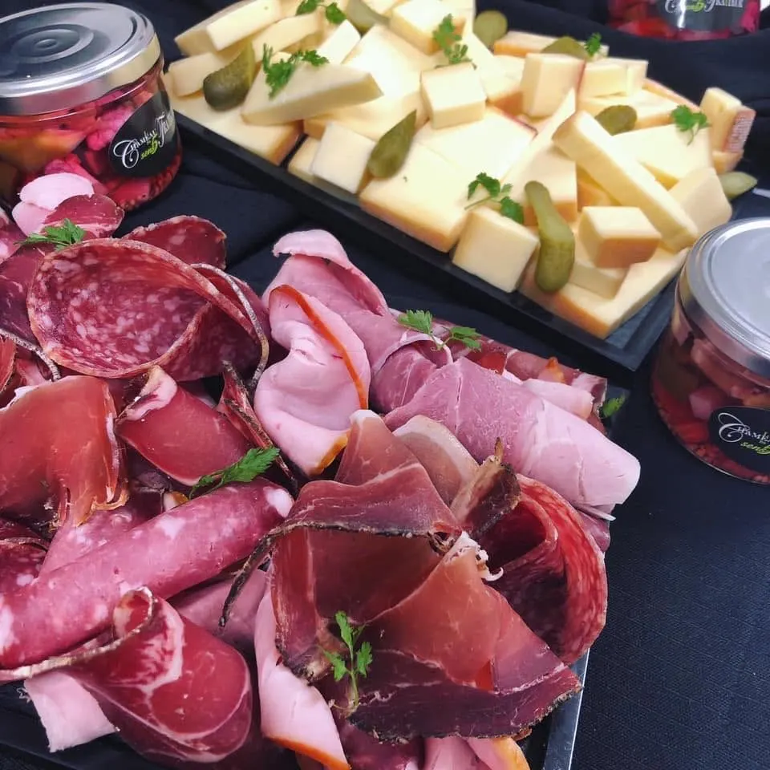

Charcuterie traiteur de père en fils.

Au 9 place de la Visitation, à Angers, Chameau Traiteur prépare pâtés en croûte, terrines, plats à emporter, buffets cocktail et pâtisseries. Une affaire de famille, du laboratoire à la vitrine.
- Charcutier traiteurpâtés en croûte, terrines, cocktails
- 4,4 sur 5106 avis Google
- 9 place de la Visitation49100 Angers
- Du mardi au samedi8 h 30 – 13 h 30 et 15 h – 19 h


La vitrine du charcutier, chaque jour.
Ce qui sort du laboratoire, en quelques photos de la maison.
Pâtés en croûte
À étages de viande rosée, ou à la pistache et aux cranberries.
Terrines
En croûte, décorées d'herbes et de fleurs.
Plats à emporter
Magret rosé, noisettes, jus et farce, en barquette.
Entrées et plateaux
Radis, grenade et fleurs comestibles ; charcuterie, fromage et pickles maison.
Le cocktail, préparé au laboratoire.
Canapés, makis, pains surprise et pièce montée pour un baptême : la maison prépare des prestations cocktail. Demandez par téléphone ou par mail.
- Canapés
- Sushis et makis
- Mini-burgers
- Pains surprise
- Verrines
- Pièces montées



En cuisine au salon Serbotel.
Bercés au labo
« L'un comme l'autre ont choisi leur métier, même s'il est vrai que, tout petits, ils venaient avec moi au labo. Disons qu'ils ont été bercés là-dedans. »Le père, à propos de ses fils Jérémy et Anthony, dans le magazine Charcuterie Gastronomie (2022)
Dans cet article, Jérémy était responsable de la production ; Anthony, pâtissier de métier, avait rejoint la maison pour hausser le niveau sur le sucré.
Et pour finir, le sucré.
Fraisier, tartes aux fruits frais : le côté pâtisserie de la maison, depuis qu'un pâtissier de métier a rejoint l'équipe.
La carte est disponible en boutique et sur demande par mail.


La boutique, place de la Visitation.
Passez en boutique du mardi au samedi, ou appelez pour une commande et un cocktail.


49100 Angers